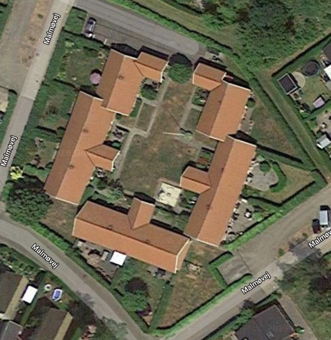

Her finder du Kastaniegårdens budgetter.
Af sikkerhedsmæssige årsager er dokumenterne blevet flyttet fra denne side til OneDrive. For at se budgetterne, skal du blot klikke på dette link:
Kodeordet er uændret i forhold til tidligere.
Som vedtaget på generalforsamling den 20. november 2018, giver foreningen en lille gave til andelshavere ved følgende lejligheder:
Gavebudgettet er cirka 200,- kr, og bestyrelsen sørger for indkøb af passende gave.
Nedenstående er en liste over håndværkere, som kan kontaktes i tilfælde af akut opstået skade på vvs-installationer, el-installationer, ventilationsanlæg, eller tagsten.
Er du i tvivl om, hvem der har ansvaret for en opstået skade, så se venligst i vedligeholdelseskataloget, eller kontakt bestyrelsen.
Silkeborg VVS-Teknik ApS
Thorupgårdsvej 30
8600 Silkeborg
Tlf. 86 85 18 97
Mob. 40 54 05 93
Tømreren Lysbro
Lysbrogade 41
8600 Silkeborg
Tlf. 86 82 52 36
Mob. 40 85 42 36
Kragelund El A/S
Balle Bygade 28
8600 Silkeborg
Tlf. 86 86 71 32
Mob. 40 36 76 20
Silkeborg Forsyning (hjemmeside)
Tietgensvej 3
8600 Silkeborg
Tlf. 89 20 64 00
Forsyningen tilbyder en gratis SMS-service, der oplyser om planlagte driftforstyrrelser vedrørende vandforsyning eller fjernvarme. Man kan tilmelde sig på denne side.
EnergiMidt (hjemmeside)
Tietgensvej 4
8600 Silkeborg
Tlf. 70 15 15 40
Indsæt information om køb og salg her.
Her finder du dagsorden og referat fra møder afholdt i foreningen.
Af sikkerhedsmæssige årsager er dokumenterne blevet flyttet fra denne side til OneDrive. For at se dagsordener og referater, skal du blot klikke på dette link:
Kastaniegårdens dagsordener og mødereferater
Kodeordet er uændret i forhold til tidligere.
Andelsboligforeningen Kastaniegården blev oprettet og bygget på eget initiativ af en gruppe mennesker i Silkeborg i 1983-84. Via en arkitekt, blev der udfærdiget et oplæg til 8 boliger, og efter at have fået del i byggekvoten fra ministeriet, var projektet i gang.
Da vi selv var bygherre, havde vi stor indflydelse på valg af byggematerialer, og dermed de fremtidige vedligeholdelsesudgifter. Efter en god licitation, kunne vi endog få indlagt mekanisk ventilation i husene.
Årene har bevist, at bygningernes kvalitet og pris var rigtig, og vi har derfor de forventede, lave vedligeholdelsesudgifter. Dog har vi været uheldig med dårligt brændte teglsten, hvorfor taget blev udskiftet i 2010.
Foreningen styres af en bestyrelse, der via vedtægter og aftaler står for den daglige drift. Ved interesse, kan regnskab m.v. udleveres.
Byggeriet ligger på Malmøvej i Silkeborg Nord, med gode busforbindelser til byen. Der er kort afstand til skoler, børneinstitutioner og dagligvarehandel via sti-system.
Her finder du foreningens regnskaber siden 2007.
Af sikkerhedsmæssige årsager er dokumenterne blevet flyttet fra denne side til OneDrive. For at se regnskaberne, skal du blot klikke på dette link:
Kodeordet er uændret i forhold til tidligere.
Her finder du foreningens vedligeholdelseskatalog, som beskriver, hvilke vedligeholdelsesopgaver, der påhviler den enkelte andelshaver, samt hvilke der påhviler foreningen.
Af vedligeholdelsesmæssige årsager er kataloget flyttet til OneDrive. For at åbne det, skal du blot klikke på linket nedenfor.
Kastaniegårdens vedligeholdelseskatalog
Vedtaget den 24. september 2019, opdateret på denne side den 29. september 2019.
Her finder du foreningens vedtægter i seneste vedtagne udgave.
Af sikkerhedsmæssige årsager er dokumenterne blevet flyttet fra denne side til OneDrive. For at se vedtægterne, skal du blot klikke på dette link:
Kodeordet er uændret i forhold til tidligere.
Vedtaget på foreningens ordinære generalforsamling den 14. juni 2021, opdateret på denne side den 19. juni 2021.
Kastaniegården er en andelsboligforening beliggende i det nordlige Silkeborg. Foreningen blev grundlagt i 1984, og består af otte huse.
I menuen til venstre finder du diverse information vedrørende foreningen, bl.a. lidt historie om foreningen tilblivelse, billeder, vedtægter og mødereferater.
Hvis du vil i kontakt med foreningen, kan du skrive til os på adressen:
kastaniegaardensilkeborg snabel-a gmail punktum com